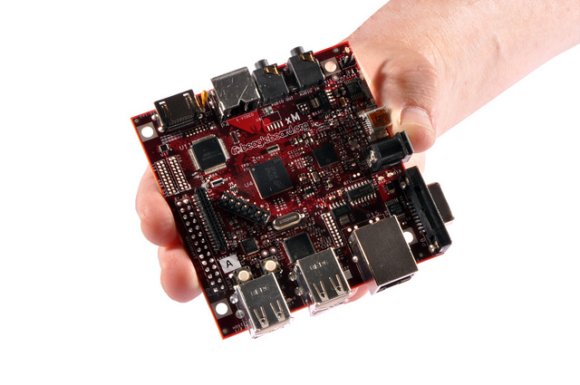
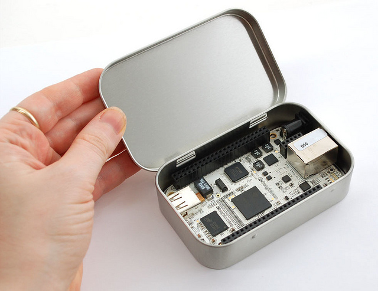
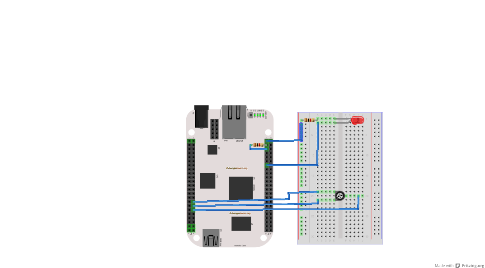

BeagleBoard 101
Use left and right arrows on your keyboard to change slides
Latest slides available at:
http://beagleboard.org/beagleboard101
This is your introduction to BeagleBone and Bonescript where you will learn:
- What is BeagleBoard.org?
- What is BeagleBone?
- What is Bonescript?
- How do I engage the BeagleBoard.org community?
BeagleBoard.org is open access to ARM processors
BeagleBoard.org is an open hardware project leveling access to low-power mobile processing
| BeagleBoard-xM: Open software desktop experience with extra MHz and extra memory |
BeagleBone: Hardware I/O focus with single cable development experience |
|

|

|
BeagleBone: open hardware expandable computer
Latest ARM open source focused on easy hardware experimentation
BeagleBone Hardware Details

- Processor
- 720MHz super-scalar ARM Cortex-A8
- armv7 and NEON SIMD instructions
- 3D graphics accelerator
- Connectivity
- USB client: power, debug and device
- USB host, Ethernet
- 2x46 pin headers
- 7xADC, 66xGPIO
- 2xI2C, 5xUART, SPI, CAN, 8xPWM
- LCD, parallel, MMC/SDIO
- Software
- 4GB microSD card with Angstrom Distribution
Expansion header state
Pin mux can be read and altered with pinMode and getPinMode
Capes extend BeagleBone capability
Attached capes
Any attached capes with ID EEPROMs would be listed here
Bonescript enables physical computing exploration
Linux handles the interfaces, JavaScript provides the glue
- Builds on two key familiar programming environments: web and Arduino
- JavaScript is language of web and first logical choice for new programmers
- HTML5 and libraries provides rapid prototyping of GUIs and ability to access remotely
- Benefits from being run on complete Linux computer
- Networking and USB stacks
- Extensive libraries and processing performance, such as OpenCV
- Web-based zero-install experience
- Avoids need to get low-level permissions on shared machine
- Event-based model of NodeJS simplifies asynchronous interactions
- I/O interactions are relatively slow compared to the CPU
- Lends itself naturally to many event handlers
- Enables single-language environment, including IDE
- Goal is a self-documenting interactive teaching web experience
- Currently using W3C Slidy for presentation view
First experience of Bonescript
Familiar Arduino function calls, exported to the browser
The links below are live and will impact the USR3 LED on your BeagleBone. The exact code used
in the browser is below and will send messages to your board using
Socket.IO.
Set pin high: run
pinMode(bone.USR3, 'out');
digitalWrite(bone.USR3, 1);
Set pin low: run
digitalWrite(bone.USR3, 0);
All GPIOs accessible via digitalWrite and digtalRead.
Native sketch-like applications
Bonescript application code uses the typical setup/loop global functions
Some boilerplate required, but fairly minimal. Below is blinking LED app
with the familiar blocking style:
require('bonescript');
ledPin = bone.USR3;
setup = function() {
pinMode(ledPin, OUTPUT);
};
loop = function() {
digitalWrite(ledPin, HIGH);
delay(1000);
digitalWrite(ledPin, LOW);
delay(1000);
};
Installation and execution of above 'blinkled.js' with node 0.6.x on a supported platform would
look something like:
# npm install bonescript
# node blinkled.js
Blinking an LED
The "hello world" of hardware
- Connect resistor lead to P8_1 (GND)
- Connect other lead to short LED lead
- Connect long LED lead to P8_3
- Launch the
Cloud9 IDE
- Run the 'blinkled.js' application
Using JavaScript timers
Run repeatedly without invoking a process or delay
Blink USR3 LED for 30 seconds: run
value = 0;
pinMode(bone.USR3, 'out');
interval = setInterval(function() {
value = value ? 0 : 1;
digitalWrite(bone.USR3, value);
}, 100);
setTimeout(function() {
clearInterval(interval);
}, 30000);
doEval
Run something remotely just once
What if we want to invoke the previous example on the target, rather than the browser?
Blink USR3 LED for 30 seconds: run
doEval(function(callback) {
var value = 0;
pinMode(bone.USR3, 'out');
var interval = setInterval(function() {
value = value ? 0 : 1;
digitalWrite(bone.USR3, value);
}, 100);
setTimeout(function() {
clearInterval(interval);
callback({'notice': "Removing doEval demo interval function"});
}, 30000);
return({'notice': "Launched doEval demo interval function"});
}, doAlert);
- Function converted to string when passed from client to server
- On client, 'callback' is a proxy for the 'doAlert' callback provided to doEval
addLoop/getLoops/removeLoop
Run something repeatedly
Blink USR3 LED: run
pinMode(bone.USR3, 'out');
addLoop(function() {
digitalWrite(bone.USR3, 1);
delay(100);
digitalWrite(bone.USR3, 0);
delay(100);
});
Halt all loops: run
getLoops(function(x) {
for(var loop in x.loops) {
removeLoop(loop);
}
});
Connecting up some inputs
Wire up this Fritzing drawing to give us some stimulus

- 2x 1kohm resistor
- 1x LED
- 1x potentiometer
You can download the
BeagleBone Fritzing part
attachInterrupt/detachInterrupt
Detect input changes
Please connect P8-3 to P8-5 with a 1khom resistor
Attach interrupt and toggle P8-3 for 30 seconds:
run
Last value read was: unknown
pinMode(bone.P8_5, 'in');
pinMode(bone.P8_3, 'out');
value = 0;
digitalWrite(bone.P8_3, value);
function interruptHandler(x) { return({'value': x.value}); }
function interruptCallback(x) {
if(x.output) $('#attachInterruptValue').text(x.output.value);
else doAlert(x);
}
function toggleP8_3() {
value = value ? 0 : 1;
digitalWrite(bone.P8_3, value);
}
attachInterrupt(bone.P8_5, interruptHandler, 'both', interruptCallback);
var interval = setInterval(toggleP8_3, 200);
setTimeout(function() {
clearInterval(interval);
detachInterrupt(bone.P8_5, doAlert);
}, 30000);
analogRead/analogWrite
Use ADCs and PWMs to read/write analog values
Monitor analog in:
run
pinMode(bone.P8_13, 'out', 4);
addLoop(function() {
var value = analogRead(bone.P9_36);
analogWrite(bone.P8_13, value);
}, 25, doAlert);
Fade in and out:
run
pinMode(bone.P8_13, 'out', 4);
addLoop(function() {
if(!this.awDirection) { this.awValue = 0.01; this.awDirection = 1; }
analogWrite(bone.P8_13, this.awValue);
this.awValue = this.awValue + (this.awDirection*0.01);
if(this.awValue > 1.0) { this.awValue = 1.0; this.awDirection = -1; }
else if(this.awValue < 0.01) { this.awValue = 0.01; this.awDirection = 1; }
}, 10, doAlert);
Halt all loops:
run
getLoops(function(loops){for(var loop in loops.loops){removeLoop(loop, doAlert);}});
Using a slider with analogWrite
Please connect P8-13 to LED through 1khom resistor
Attach to slider:
run
pinMode(bone.P8_13, 'out', 4);
$("#slider1").bind("slidechange", function(event, ui) {
analogWrite(bone.P8_13, ui.value/100.0);
})
Using a slider with analogRead
Please connect P9-36 to potentiometer and adust from 0V to 1.8V
Attach to slider for 30 seconds: run
arUpdateSlider = function(x) {
if(x.value) $("#slider2").slider("option", "value", x.value*100);
if(x.halt) alert("Halting analogRead slider update");
};
doEval(function(callback) {
var interval = setInterval(function() {
analogRead(bone.P9_36, callback);
}, 100);
setTimeout(function() {
clearInterval(interval);
callback({'halt':true});
}, 30000);
}, arUpdateSlider);
Engaging the community
- Before you ask
- Learn about the on-line resources and documentation
- Try to find the answer yourself
- Don't assume you are entitled to an answer
- Ask in the right way in the right place
- Question should be easy to answer for someone who knows
- Detail your objective, what you tried and the results
- Use meaningful and specific subject headers
- Using the on-line chat can
help you formulate your question for
the mailing list
- Listen to the answers, even if they seem unhelpful
- Share useful lessons you learn
Why work with community?
- Faster innovation
- Off-cycle development
- Engage innovators
- Direct peer interaction
- Better solutions
- Expert peer review
- Community support
- Early feedback

Why push code to mainline?
- Stable snapshot development
- Increases stability
- Isolates from community
- High update cost with reduced support and external contribution
- Community synchronized
- Increased potential churn
- Leverages the community
- Requires defined method for maintaining value-add

On what do I work with the community?
Typical BeagleBone boot process
The five phases
- ROM loads u-boot SPL (MLO)
- Default location is /media/mmcblk0p1/MLO
- Performs external DRAM configuration
- u-boot SPL (MLO) loads u-boot
- Default location is /media/mmcblk0p1/u-boot.img
- u-boot executes default environment/commands
- Default location is /media/mmcblk0p1/uEnv.txt
- By default, 'uenvcmd' variable is executed
- Commands load kernel
- Default location is /media/mmcblk0p1/uImage
- Kernel reads root file system
Highlighted community projects
Linaro
- Linaro is a non-profit formed in June 2010
- "to make it easier for ARM partners to deploy the latest
technology into optimized Linux based products"
- Started by ARM
- with Texas Instruments, Freescale, IBM, Samsung and ST Ericsson
- Focused on improving core open source tools and components for ARM
Cortex-A processors
- Compiler, debugger, profiler, kernel and middleware
- Validation of efforts done with Ubuntu and Android
- Includes "landing teams" for SoC vendors
- The BeagleBoard-xM is one of their release platforms
Yocto
- Yocto is a Linux Foundation project
started in
April 2011
- "and is an open source collaboration project that provides templates,
tools and methods to help you create custom Linux-based systems for
embedded products regardless of the hardware architecture."
- The advisory board includes members from several key silicon vendors,
embedded Linux suppliers and the OpenEmbedded community
- Building on OpenEmbedded technology and providing board support package
(BSP) development tools for embedded platforms
- Committed to support ARM, PPC, MIPS, x86 and x86-64 ISAs
- Aligned with the OpenEmbedded community through OE-core
- The BeagleBoard-xM is their ARM reference platform
Backup slides
Services running on BeagleBone
Default web services ready for you to try

The interactivity presented on the previous slide is provided through a set of services
running on your BeagleBone. You can experiment with some of these services below. The
immediately following slides will provide you with some dynamic information about your
BeagleBone.
-
Cloud9 IDE
- Write applications directly in the browser
-
Gate One
- Execute ssh (terminal) directly in the browser
- JavaScript terminal (bone101)
- Interactively execute JavaScript in the browser
- Shell (bone101)
- Issue commands to bash using JQuery Terminal
Other starting point software
Your BeagleBone is currently running the Angstrom Distribution. Below are links to upgrades
for Angstrom and various other starting points you might choose for your project.
- BeagleBone
- Texas Instruments releases:
Android,
Linux,
StarterWare (no OS)
- Linux:
Angstrom,
Ubuntu,
Debian,
ArchLinux,
Gentoo,
Sabayon,
Buildroot,
Erlang,
Fedora
- Other:
QNX,
FreeBSD
- BeagleBoard and BeagleBoard-xM
- Texas Instruments releases:
Android (see AM3715),
Linux,
DVSDK
- Linux:
Angstrom,
Ubuntu,
Debian,
ArchLinux
(xM),
Gentoo,
Fedora
- Other:
Windows Embedded,
QNX
(xM),
RISC OS,
Puppy Bits,
Symbian
Programming an SD card
Your get-out-of-jail-free card
- Removable SD cards enables experimentation and ease of getting
back to a known starting point
- First, make sure you have an appropriately sized microSD card and an
adapter for your PC
- Linux and Mac OS X